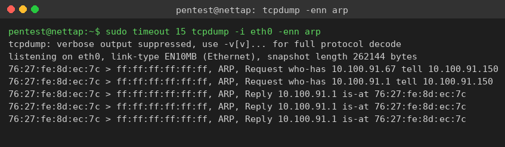
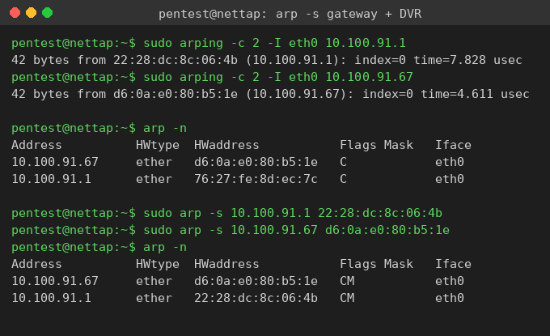
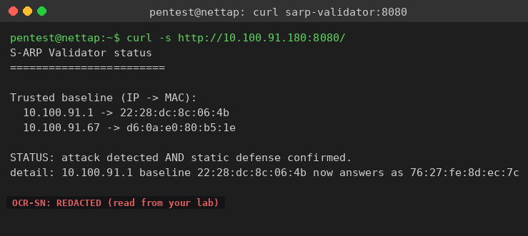

Exercise 9B: Lock Down Layer 2
Before You Begin
You will independently defend a different cafe segment against a live ARP spoofing attack. A rogue device poisons the gateway binding and runs a man-in-the-middle between the security camera DVR and the gateway. Your job is to baseline the legitimate MACs, watch the poison hit the wire, pin static ARP entries for both the gateway and the DVR, confirm they held, and read the defensive token off the S-ARP validator. No walkthrough this time: you have the tools and the methodology from Exercise 9A.
Make sure you have:
- VPN connected and verified
- The lab session started (network tap reachable at
10.100.<your_third_octet>.250) - Completed Exercise 9A (Securing the Wire)
Engagement Status
Client: Bean & Byte Cafe Role: Security Auditor Phase: Reconnaissance Service Enumeration Exploitation Detection Defense
What you know so far:
- You completed the full ARP series: reconnaissance, spoofing, detection, and guided defense
- You know how to baseline a MAC, pin a static ARP entry, and read the S-ARP validator token
- A different segment is now under threat: the security camera system
Your task: Protect the DVR segment from an active ARP spoofing attack on your own, verify your defenses held, and write a defensive recommendation for the owner.
Objective
Defend the Bean & Byte Cafe's security camera DVR from a live ARP spoofing attack. Detect the attack, pin static ARP entries that hold the DVR and gateway bindings, confirm they survived, and recover the flag from the S-ARP validator.
Difficulty: Advanced Estimated time: 60 minutes
Network Topology
| Device | IP Offset | Hostname | Role |
|---|---|---|---|
| Cafe Gateway | .1 | cafe-gateway | Default route, NAT (PROTECT) |
| Security Camera DVR | .67 | cafe-dvr | Camera recording (TARGET) |
| Digital Menu Display | .89 | cafe-menu | Menu signage |
| NAS Backup | .127 | cafe-nas | File storage |
| Customer Laptop | .200 | customer-pc | Guest device |
| Rogue Device | .150 | rogue | Poisons the gateway and MITMs the DVR after a short delay |
| S-ARP Validator | .180 | sarp-monitor | Active ARP monitor, serves the token on :8080 |
| Network Tap | .250 | nettap | Your SSH foothold on the cafe broadcast domain |
The target changed
The rogue device in this lab targets the Security Camera DVR (.67), not the POS terminal. The validator protects the gateway (.1) and the DVR (.67), so baseline and pin both.
Your subnet
The cafe network uses 10.100.<third_octet>.0/24, where the third octet is unique to your session. The transcripts below were captured on 10.100.91.0/24. Substitute your own third octet wherever you see 91.
Objectives Checklist
- SSH into the network tap for Layer 2 access
- Baseline the legitimate MAC for the gateway and the DVR (before the attack)
- Observe the rogue device's poison on the wire with
tcpdump - Pin static ARP entries for both the gateway and the DVR
- Verify both entries held during the attack (MAC unchanged, permanent flag)
- Read the S-ARP validator token and assemble the flag
- Write the 3-paragraph defensive recommendation
Tools and Concepts
You have everything from Exercise 9A. A reminder of the key tools, with no full command list this time:
| Tool | What It Does |
|---|---|
arping |
Send an ARP request and read the live MAC behind an IP |
arp / ip neigh |
View and manage ARP cache entries (dynamic and permanent) |
tcpdump |
Capture and filter ARP frames on the wire |
curl |
Read the S-ARP validator status page on port 8080 |
Key concepts to apply:
- Baseline the real MACs before the poison arrives, so you pin a trusted value.
- A static entry shows the permanent (
M) flag and cannot be overwritten by spoofed replies. - The DVR and the gateway both need protection for full bidirectional defense.
- The validator reveals the token only after it detects the live attack AND confirms a static entry held.
Flag
The flag has multiple tokens published together by the S-ARP validator once your defense is in place.
Flag format: OCR{_____________}
Where to look
Read the validator's status page on port 8080 after the attack is live and your static entries are pinned. The token is prefixed with OCR-SN:; use only the value after the prefix. The same methodology as Exercise 9A applies: different segment, different token.
Reference Transcripts
You should run this yourself. The captures below are from a real run on 10.100.91.0/24 so you can confirm your output looks right.
Baseline, observe, and defend
Baseline the gateway and DVR with arping, watch the poison in tcpdump, then pin both bindings. The spoof is visible as the rogue broadcasting that it owns the gateway IP.

Real spoof capture
pentest@nettap:~$ sudo timeout 15 tcpdump -i eth0 -enn arp
76:27:fe:8d:ec:7c > ff:ff:ff:ff:ff:ff, ARP, Request who-has 10.100.91.67 tell 10.100.91.150
76:27:fe:8d:ec:7c > ff:ff:ff:ff:ff:ff, ARP, Request who-has 10.100.91.1 tell 10.100.91.150
76:27:fe:8d:ec:7c > ff:ff:ff:ff:ff:ff, ARP, Reply 10.100.91.1 is-at 76:27:fe:8d:ec:7c
76:27:fe:8d:ec:7c > ff:ff:ff:ff:ff:ff, ARP, Reply 10.100.91.1 is-at 76:27:fe:8d:ec:7c
10.100.91.150 (MAC 76:27:fe:8d:ec:7c) claims the gateway IP .1 but answers with its own MAC. It also probes the DVR .67 to set up the directed man-in-the-middle.

Real baseline, poison, and pin
pentest@nettap:~$ sudo arping -c 2 -I eth0 10.100.91.1
42 bytes from 22:28:dc:8c:06:4b (10.100.91.1): index=0 time=7.828 usec
pentest@nettap:~$ sudo arping -c 2 -I eth0 10.100.91.67
42 bytes from d6:0a:e0:80:b5:1e (10.100.91.67): index=0 time=4.611 usec
pentest@nettap:~$ arp -n
10.100.91.67 ether d6:0a:e0:80:b5:1e C eth0
10.100.91.1 ether 76:27:fe:8d:ec:7c C eth0
pentest@nettap:~$ sudo arp -s 10.100.91.1 22:28:dc:8c:06:4b
pentest@nettap:~$ sudo arp -s 10.100.91.67 d6:0a:e0:80:b5:1e
pentest@nettap:~$ arp -n
10.100.91.67 ether d6:0a:e0:80:b5:1e CM eth0
10.100.91.1 ether 22:28:dc:8c:06:4b CM eth0
76:27:fe:8d:ec:7c before the pin. After arp -s, the gateway binding is back to the real 22:28:dc:8c:06:4b and both entries show the M (permanent) flag, so the poison can no longer move them.
Read the validator token
With the attack live and both bindings pinned, read the validator status page. If it still reports monitoring..., wait and poll again.

Real validator output
pentest@nettap:~$ curl -s http://10.100.91.180:8080/
S-ARP Validator status
========================
Trusted baseline (IP -> MAC):
10.100.91.1 -> 22:28:dc:8c:06:4b
10.100.91.67 -> d6:0a:e0:80:b5:1e
STATUS: attack detected AND static defense confirmed.
detail: 10.100.91.1 baseline 22:28:dc:8c:06:4b now answers as 76:27:fe:8d:ec:7c
OCR-SN:<TOKEN>
Flag
The validator publishes OCR-SN:<TOKEN>. Drop the OCR-SN: prefix and wrap the value:
Hints
Hint 1: Where to start
SSH into the tap first (ssh pentest@10.100.91.250, password Security1#). Then baseline the gateway and DVR MACs with arping right away, before the rogue starts. You can only pin a trusted value if you captured it while the network was clean.
Hint 2: The attack target
The rogue targets the DVR at .67 and poisons the gateway at .1. Pin static entries for both: the gateway protects your route, the DVR protects the camera path. The validator wants the gateway binding held to release the token.
Hint 3: Reading the token
The token lives on the validator's HTTP status page at http://10.100.91.180:8080/, not in a container log you can reach. Poll it with curl after your static entries are in place. It releases the token only once it has both detected the live spoof and confirmed a static entry is holding the binding.
Analysis Task
After defending the network and collecting the flag, write a 3-paragraph recommendation for the cafe owner.
Paragraph 1: The Problem. Explain in plain language what ARP spoofing is and why the security cameras are vulnerable. The owner is not technical: use analogies they will understand.
Paragraph 2: The Immediate Fix. What should the owner do this week to protect the camera system? Be specific about what to buy, what to configure, and roughly what it costs.
Paragraph 3: The Long-Term Strategy. What should the owner plan over the next 3-6 months? Cover network segmentation, monitoring, and compliance.
This analysis is not graded
The recommendation is a professional development exercise. In real consulting, clear communication with non-technical stakeholders matters as much as the technical work.
Common Pitfalls
Defending the wrong device
The target here is the DVR, not the POS terminal. Verify you are protecting .67 and .1.
Pinning the poisoned MAC
If you read the gateway MAC from your cache after the poison lands, you may pin the attacker. Baseline with arping early and pin the clean value.
Checking only one direction
Your cache being clean does not mean the DVR or gateway is safe. The validator probes the protected hosts independently; trust its verdict, not just your local cache.
Polling the validator too early
The validator needs to learn its baseline and then see the live attack before it can confirm the defense. If it reports monitoring..., wait and poll again.
What's Next
With Exercises 9A and 9B complete, you have finished the full ARP attack-and-defend series. You can now:
- Discover devices at Layer 2 with ARP reconnaissance
- Attack by poisoning ARP caches to intercept traffic
- Detect ARP spoofing with arpwatch, tcpdump, and signature analysis
- Defend with static ARP and an understanding of S-ARP and DAI
These skills are the foundation for Layer 2 security in any network environment.